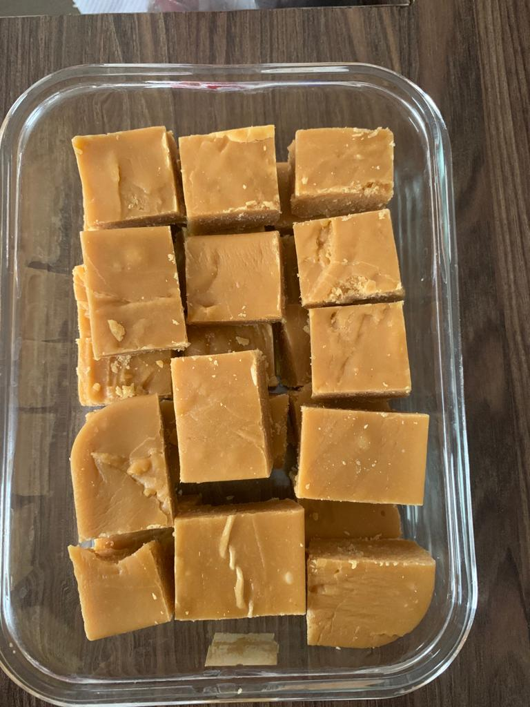

BESAN BURFI

INGRIDIENTS
- Gram flour 2 cups
- Green cardamom powder 1/2 teaspoon
- Pistachios silvered 10-12
- Almond silvered 10-12
- Powdered sugar 1 cup
- Pure ghee 1 cup + for greasing
INSTRUCTIONS
- Heat the ghee in a non stick kadai;add the gram flour and saute on low heat, stirring continuously, for 10 to 15 min, or till it starts changing colour and is fragnant.
- Add the cardamom powder and pistachio and almond silvers, and mix. Remove from the heat and set aside to cool.
- Add the powdered sugar and mix well.
- Grease a six by eight inch aluminium straight-sided shallow tray with the ghee.Pour the gram flour mixture into the tray and spread it evenly with a greased spatula.
- Cool and cut into squares or diamonds and serve. Store the burfi in an airtight container.